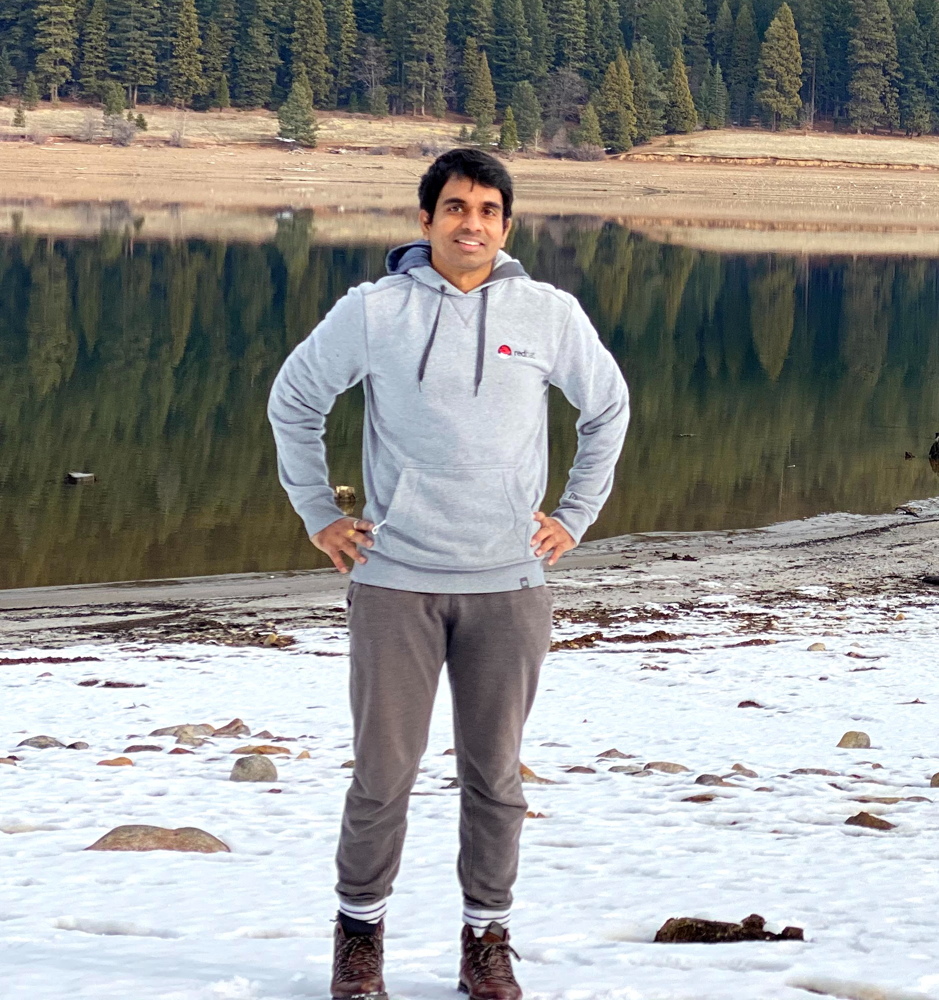

I work as a software engineer at Google. I received my currently Ph.D. in Computer Engineering from University of Southern California (USC) working under the guidance of Professor Murali Annavaram. My thesis is on building straggler-resilient and private machine learning systems in the cloud. Prior to starting Ph.D, I worked for two years at Intel. I completed my M.S. in Computer Science from USC and my Bachelors and Masters of Technology in Electrical Engineering from Indian Institute of Technology, Madras.
• IEEE CLOUD 2021 Krishna Giri Narra , Zhifeng Lin, Yongqin Wang, Keshav Balasubramaniam, Murali Annavaram, “Origami Inference: Private Inference Using Hardware Enclaves”. ARXIV, abs/1912.03485, 2019.
• ICDCS 2020 Krishna Giri Narra , Zhifeng Lin, Ganesh Ananthanarayanan, Salman Avestimehr, Murali Annavaram, “Collage Inference: Using Coded Redundancy for Lowering Latency Variation in Distributed Image Classification Systems”. Published at ICDCS 2020.
• SC 2019 Krishna Giri Narra*, Zhifeng Lin*, Mehrdad Kiamari, Salman Avestimehr, Murali Annavaram, “Slack Squeeze Coded Computing(S2C2) for Adaptive Straggler Mitigation”. Published at the Supercomputing Conference (SC 2019). [* equal contribution] Best Paper Finalist. Best Student Paper Finalist.
• ICML 2019 Krishna Giri Narra , Zhifeng Lin, Ganesh Ananthanarayanan, Salman Avestimehr, Murali Annavaram, “Collage Inference: Achieving low tail latency during distributed image classification using coded redundancy models”. CodML workshop at ICML 2019.
• ARXIV 2019 Zhifeng Lin, Krishna Giri Narra , Mingchao Yu, Salman Avestimehr, Murali Annavaram, “Train Where the Data is: A Case for Bandwidth Efficient Coded Training. ARXIV, abs/1910.10283, 2019.
• NeurIPS 2018 Mingchao Yu*, Zhifeng Lin*, Krishna Giri Narra , Songze Li, Youjie Li, Nam Sung Kim, Alexander G. Schwing, Murali Annavaram, Salman Avestimehr, “GradiVeQ: Vector Quantization for Bandwidth-Efficient Gradient Aggregation in Distributed CNN Training”. Published at NeurIPS 2018. [* equal contribution]
• MICRO 2017 Gunjae Koo*, Kiran Matam*, Te I, Krishna Giri Narra , Jing Li, Hung-Wei Tseng, Steven Swanson, Murali Annavaram, “Summarizer: Trading communication with computing near storage”. Published at IEEE International Symposium on Microarchitecture (MICRO 2017). [* equal contribution]
• Soft Computing 2015 L.Srivani, N.H.V.Krishna Giri , Shankar Ganesh, V.Kamakoti, “Generating Synthetic Benchmark Circuits for Accelerated Life Testing of Field Programmable Gate Arrays using Genetic Algorithm and Particle Swarm Optimization”, Applied Soft Computing, Volume 27, February 2015.
Best Dissertation award in Computer Engineering at USC (2021).
S2C2 paper is selected as a best paper finalist at the Supercomputing Conference (SC'19).
S2C2 paper is selected as a best student paper finalist at the Supercomputing Conference (SC'19).